CODING AGENTS AS PIXEL WORLD MODELS
traex/DeepSeek-V4.1-Flash · material_0033
点击播放 · 原生 RGB 像素
逐轮保存的候选
回放视频、检查图与代码变化。
每份候选均可单独播放。实际图片检查记录在下方工具轨迹中。
候选 01播放与检查图
点击播放 · 原生 RGB 像素

展开代码变化
--- 上一保存版本
+++ 本次保存版本
@@ -0,0 +1,541 @@
+from __future__ import annotations
+
+import math
+from pathlib import Path
+
+import numpy as np
+from PIL import Image, ImageDraw, ImageFilter, ImageFont
+
+import artifact_io
+
+
+W, H = 256, 144
+SS = 4
+CW, CH = W * SS, H * SS
+N = 20
+FPS = 4.0
+
+FONT_BOLD = "/usr/share/fonts/truetype/dejavu/DejaVuSans-Bold.ttf"
+FONT_REGULAR = "/usr/share/fonts/truetype/dejavu/DejaVuSans.ttf"
+
+
+def s(value: float) -> int:
+ return int(round(value * SS))
+
+
+def box(values: tuple[float, float, float, float]) -> tuple[int, int, int, int]:
+ return tuple(s(v) for v in values)
+
+
+def points(values: list[tuple[float, float]]) -> list[tuple[int, int]]:
+ return [(s(x), s(y)) for x, y in values]
+
+
+def font(path: str, size: float) -> ImageFont.FreeTypeFont:
+ return ImageFont.truetype(path, max(1, s(size)))
+
+
+def clamp(value: float, low: float = 0.0, high: float = 1.0) -> float:
+ return max(low, min(high, value))
+
+
+def smoothstep(edge0: float, edge1: float, value: float) -> float:
+ t = clamp((value - edge0) / (edge1 - edge0))
+ return t * t * (3.0 - 2.0 * t)
+
+
+def mix(a: tuple[float, float, float], b: tuple[float, float, float], t: float) -> tuple[float, float, float]:
+ return tuple(a[i] + (b[i] - a[i]) * t for i in range(3))
+
+
+def pil_rgba(rgb: np.ndarray, alpha: np.ndarray) -> Image.Image:
+ rgba = np.empty((CH, CW, 4), dtype=np.uint8)
+ rgba[..., :3] = np.clip(rgb, 0, 255).astype(np.uint8)
+ rgba[..., 3] = np.clip(alpha, 0, 255).astype(np.uint8)
+ return Image.fromarray(rgba, "RGBA")
+
+
+def polygon_mask(poly: list[tuple[float, float]], ellipse: tuple[float, float, float, float] | None = None) -> np.ndarray:
+ mask = Image.new("L", (CW, CH), 0)
+ draw = ImageDraw.Draw(mask)
+ draw.polygon(points(poly), fill=255)
+ if ellipse is not None:
+ draw.ellipse(box(ellipse), fill=255)
+ return np.asarray(mask, dtype=np.float32) / 255.0
+
+
+def make_background() -> Image.Image:
+ yy, xx = np.mgrid[0:CH, 0:CW].astype(np.float32)
+ xn = xx / (CW - 1)
+ yn = yy / (CH - 1)
+
+ wall_top = np.array([229, 233, 230], dtype=np.float32)
+ wall_bottom = np.array([190, 203, 201], dtype=np.float32)
+ wall = wall_top[None, None, :] * (1.0 - yn[..., None]) + wall_bottom[None, None, :] * yn[..., None]
+
+ warm = np.exp(-(((xn - 0.79) / 0.38) ** 2 + ((yn - 0.12) / 0.52) ** 2))
+ cool = np.exp(-(((xn - 0.16) / 0.32) ** 2 + ((yn - 0.44) / 0.60) ** 2))
+ wall += warm[..., None] * np.array([17.0, 9.0, -2.0], dtype=np.float32)
+ wall -= cool[..., None] * np.array([4.0, 1.0, 0.0], dtype=np.float32)
+
+ bench_y = 109.0 / H
+ bench = yn >= bench_y
+ bench_t = np.clip((yn - bench_y) / (1.0 - bench_y), 0.0, 1.0)
+ bench_top = np.array([57, 68, 68], dtype=np.float32)
+ bench_bottom = np.array([22, 31, 33], dtype=np.float32)
+ bench_rgb = bench_top[None, None, :] * (1.0 - bench_t[..., None]) + bench_bottom[None, None, :] * bench_t[..., None]
+ bench_rgb += (np.exp(-((xn - 0.50) / 0.44) ** 2) * 6.0)[..., None]
+ wall[bench] = bench_rgb[bench]
+
+ base = Image.fromarray(np.clip(wall, 0, 255).astype(np.uint8), "RGB").convert("RGBA")
+ draw = ImageDraw.Draw(base, "RGBA")
+
+ # A soft, out-of-focus flask gives the background a laboratory context.
+ ghost = Image.new("RGBA", (CW, CH), (0, 0, 0, 0))
+ gd = ImageDraw.Draw(ghost, "RGBA")
+ gd.rounded_rectangle(box((218, 57, 239, 67)), radius=s(2), fill=(194, 218, 215, 19), outline=(231, 243, 239, 31), width=s(0.7))
+ gd.polygon(points([(219, 66), (238, 66), (247, 105), (241, 110), (216, 110), (210, 105)]), fill=(175, 208, 205, 18), outline=(226, 240, 237, 28))
+ gd.ellipse(box((216, 104, 242, 113)), fill=(93, 118, 117, 18), outline=(224, 239, 235, 25), width=s(0.6))
+ gd.line(points([(222, 66), (219, 103)]), fill=(241, 249, 245, 35), width=s(0.7))
+ gd.line(points([(235, 66), (241, 104)]), fill=(240, 249, 245, 23), width=s(0.6))
+ ghost = ghost.filter(ImageFilter.GaussianBlur(s(1.5)))
+ base = Image.alpha_composite(base, ghost)
+
+ draw = ImageDraw.Draw(base, "RGBA")
+ # Bench lip and a faint reflected horizon.
+ draw.line([(0, s(109)), (CW, s(109))], fill=(178, 193, 188, 48), width=s(0.9))
+ draw.line([(0, s(110.2)), (CW, s(110.2))], fill=(10, 17, 18, 90), width=s(0.8))
+ draw.rectangle(box((0, 109, W, 111)), fill=(210, 220, 215, 9))
+
+ # Ambient occlusion and object shadows.
+ shadows = Image.new("RGBA", (CW, CH), (0, 0, 0, 0))
+ sd = ImageDraw.Draw(shadows, "RGBA")
+ sd.ellipse(box((24, 102, 106, 116)), fill=(7, 13, 15, 72))
+ sd.ellipse(box((90, 105, 191, 122)), fill=(5, 12, 15, 94))
+ sd.ellipse(box((106, 121, 176, 132)), fill=(2, 8, 9, 112))
+ sd.polygon(points([(30, 106), (91, 104), (99, 111), (25, 112)]), fill=(8, 14, 16, 38))
+ shadows = shadows.filter(ImageFilter.GaussianBlur(s(3.2)))
+ base = Image.alpha_composite(base, shadows)
+
+ # Gentle reflected color on the glossy bench.
+ reflection = Image.new("RGBA", (CW, CH), (0, 0, 0, 0))
+ rd = ImageDraw.Draw(reflection, "RGBA")
+ rd.polygon(points([(108, 123), (173, 123), (179, 140), (102, 140)]), fill=(91, 119, 125, 24))
+ rd.polygon(points([(34, 105), (84, 105), (76, 133), (28, 133)]), fill=(91, 70, 51, 18))
+ rd.ellipse(box((118, 123, 162, 140)), fill=(167, 68, 77, 12))
+ reflection = reflection.filter(ImageFilter.GaussianBlur(s(3.5)))
+ base = Image.alpha_composite(base, reflection)
+ return base
+
+
+BACKGROUND = make_background()
+
+INTERIOR_POLY = [(102.0, 62.0), (178.0, 62.0), (175.0, 119.0), (173.5, 123.0), (106.5, 123.0), (105.0, 119.0)]
+INTERIOR_MASK = polygon_mask(INTERIOR_POLY, ellipse=(106.5, 116.5, 173.5, 126.0))
+YY, XX = np.mgrid[0:CH, 0:CW].astype(np.float32)
+YY_NATIVE = YY / SS
+XX_NATIVE = XX / SS
+
+
+def add_soft_shadow(base: Image.Image, pivot_x: float, pivot_y: float, theta: float) -> Image.Image:
+ if pivot_x < 105:
+ spread = 24 + 8 * math.sin(math.radians(theta))
+ layer = Image.new("RGBA", (CW, CH), (0, 0, 0, 0))
+ d = ImageDraw.Draw(layer, "RGBA")
+ d.ellipse(box((pivot_x - spread, 105.0, pivot_x + spread, 115.0)), fill=(5, 12, 14, 46))
+ layer = layer.filter(ImageFilter.GaussianBlur(s(3.5)))
+ return Image.alpha_composite(base, layer)
+ return base
+
+
+def liquid_geometry(frame: int) -> tuple[float, float, float]:
+ pour = smoothstep(2.0, 6.0, frame) * (1.0 - smoothstep(13.0, 15.0, frame))
+ level = 96.0 - 12.0 * smoothstep(2.0, 14.0, frame)
+ blue = smoothstep(3.0, 17.0, frame)
+ return level, blue, pour
+
+
+def render_liquid(base: Image.Image, frame: int) -> Image.Image:
+ level, blue, _ = liquid_geometry(frame)
+ level_px = level * SS
+ below = (YY >= level_px).astype(np.float32)
+ liquid_mask = INTERIOR_MASK * below
+
+ # The surface is a shallow ellipse, catching a brighter rim of light.
+ surface = Image.new("L", (CW, CH), 0)
+ sd = ImageDraw.Draw(surface)
+ surface_width = 72.0
+ sd.ellipse(box((128.0 - surface_width / 2, level - 2.3, 128.0 + surface_width / 2, level + 2.7)), fill=255)
+ surface_mask = np.asarray(surface, dtype=np.float32) / 255.0
+ mask = np.clip(liquid_mask + surface_mask * below, 0.0, 1.0)
+
+ # A soft reaction front rises through the solution as the base diffuses.
+ front = 122.0 - 50.0 * blue
+ blend = np.clip((YY_NATIVE - (front - 3.0)) / 6.0, 0.0, 1.0)
+ blend = blend * blend * (3.0 - 2.0 * blend)
+ red = np.array([178, 61, 73], dtype=np.float32)
+ magenta = np.array([130, 73, 132], dtype=np.float32)
+ blue_rgb = np.array([43, 91, 153], dtype=np.float32)
+ low_mix = blend[..., None]
+ color = red[None, None, :] * (1.0 - low_mix) + blue_rgb[None, None, :] * low_mix
+ purple_band = np.exp(-((YY_NATIVE - front) / 5.0) ** 2)[..., None] * 0.34
+ color = color * (1.0 - purple_band) + magenta[None, None, :] * purple_band
+
+ # Curved glass shading and a little meniscus brightness.
+ xcenter = (XX_NATIVE - 140.0) / 36.0
+ side_shade = 0.78 + 0.22 * np.sqrt(np.clip(1.0 - xcenter**2, 0.0, 1.0))
+ vertical = 0.88 + 0.12 * np.clip((YY_NATIVE - level) / 30.0, 0.0, 1.0)
+ color *= (side_shade * vertical)[..., None]
+ color += np.array([23.0, 18.0, 17.0], dtype=np.float32)[None, None, :] * (1.0 - blend[..., None])
+
+ surface_band = np.exp(-((YY_NATIVE - level) / 1.15) ** 2)[..., None]
+ surface_color = color * 0.64 + np.array([223, 196, 185], dtype=np.float32)[None, None, :] * 0.36
+ surface_color = surface_color * (1.0 - surface_band) + np.array([248, 219, 206], dtype=np.float32)[None, None, :] * surface_band
+
+ alpha = mask * (222.0 + 18.0 * surface_band[..., 0])
+ layer = pil_rgba(surface_color, alpha)
+ return Image.alpha_composite(base, layer)
+
+
+def render_litmus(base: Image.Image, frame: int) -> Image.Image:
+ level, blue, pour = liquid_geometry(frame)
+ strips = [
+ (118.6, 120.6, 80.4, 3.8),
+ (136.7, 138.8, 76.8, 4.3),
+ (154.8, 152.0, 81.7, 3.7),
+ ]
+ red = np.array([196, 63, 70], dtype=np.float32)
+ blue_rgb = np.array([47, 95, 157], dtype=np.float32)
+ warm_paper = np.array([232, 212, 183], dtype=np.float32)
+
+ for index, (x_bottom, x_top, y_top, width) in enumerate(strips):
+ strip_mask = Image.new("L", (CW, CH), 0)
+ sm = ImageDraw.Draw(strip_mask)
+ sm.polygon(
+ points(
+ [
+ (x_top - width / 2, y_top),
+ (x_top + width / 2, y_top),
+ (x_bottom + width / 2, 120.5),
+ (x_bottom - width / 2, 120.5),
+ ]
+ ),
+ fill=255,
+ )
+ m = np.asarray(strip_mask, dtype=np.float32) / 255.0
+ front = 122.0 - 50.0 * blue
+ local_blue = np.clip((YY_NATIVE - (front - 4.0)) / 8.0, 0.0, 1.0)
+ local_blue = local_blue * local_blue * (3.0 - 2.0 * local_blue)
+ # Dry paper above the liquid wicks color a little later than the immersed part.
+ wick = smoothstep(5.0, 18.0, frame) * np.clip((120.0 - YY_NATIVE) / 48.0, 0.0, 1.0)
+ local_blue = np.clip(local_blue + wick * blue * 0.72, 0.0, 1.0)
+ paper_tint = 0.16 + 0.06 * (index % 2)
+ color = red[None, None, :] * (1.0 - paper_tint) + warm_paper[None, None, :] * paper_tint
+ color = color[None, None, :] * (1.0 - local_blue[..., None]) + blue_rgb[None, None, :] * local_blue[..., None]
+
+ # Paper fibers and a slightly uneven wet edge.
+ fibers = 0.92 + 0.08 * np.sin(YY_NATIVE * 3.1 + index * 2.4) * np.sin(XX_NATIVE * 2.7 + index)
+ color *= fibers[..., None]
+ edge_glow = np.exp(-((XX_NATIVE - (x_top + x_bottom) / 2.0) / (width * 0.48)) ** 2)
+ color += (edge_glow * 10.0)[..., None]
+ alpha = m * (207.0 + 18.0 * np.exp(-((YY_NATIVE - level) / 2.0) ** 2))
+ layer = pil_rgba(color, alpha)
+ base = Image.alpha_composite(base, layer)
+
+ draw = ImageDraw.Draw(base, "RGBA")
+ draw.line(points([(x_top - width / 2, y_top), (x_bottom - width / 2, 120.0)]), fill=(99, 48, 59, 80), width=s(0.45))
+ draw.line(points([(x_top + width / 2, y_top), (x_bottom + width / 2, 120.0)]), fill=(249, 229, 209, 67), width=s(0.4))
+ if blue > 0.08:
+ draw.line(
+ points([(x_top + width / 2 + 0.4, y_top + 2), (x_bottom + width / 2 + 0.4, 119)]),
+ fill=(102, 158, 214, int(35 + 35 * blue)),
+ width=s(0.35),
+ )
+
+ # A small tape label identifies the paper without becoming a title card.
+ draw = ImageDraw.Draw(base, "RGBA")
+ draw.rounded_rectangle(box((120, 115, 157, 121.5)), radius=s(1.0), fill=(230, 219, 190, 135), outline=(95, 76, 61, 62), width=s(0.35))
+ draw.text((s(122.0), s(116.1)), "LITMUS", font=font(FONT_BOLD, 3.7), fill=(72, 65, 57, 205))
+ return base
+
+
+def draw_ripples(base: Image.Image, frame: int, level: float, pour: float) -> Image.Image:
+ layer = Image.new("RGBA", (CW, CH), (0, 0, 0, 0))
+ d = ImageDraw.Draw(layer, "RGBA")
+ if pour > 0.02:
+ phase = (frame * 0.72) % 1.0
+ for k in range(2):
+ p = (phase + k * 0.48) % 1.0
+ rx = 6.0 + 13.0 * p
+ ry = 1.2 + 2.7 * p
+ alpha = int(112 * (1.0 - p) * pour)
+ d.arc(box((137.5 - rx, level - ry, 137.5 + rx, level + ry)), 6, 174, fill=(246, 221, 205, alpha), width=s(0.55))
+ # Impact froth.
+ d.ellipse(box((133.8, level - 1.0, 141.2, level + 1.6)), fill=(234, 230, 213, int(82 * pour)))
+ for j, (dx, dy, r) in enumerate([(-3.8, -1.4, 0.65), (4.5, -0.8, 0.55), (-1.2, -3.1, 0.45)]):
+ a = int((55 + 16 * j) * pour)
+ d.ellipse(box((137.5 + dx - r, level + dy - r, 137.5 + dx + r, level + dy + r)), fill=(249, 243, 224, a))
+ return Image.alpha_composite(base, layer)
+
+
+def draw_stream(base: Image.Image, frame: int, level: float, pour: float, mouth: tuple[float, float]) -> Image.Image:
+ if pour <= 0.015:
+ return base
+ layer = Image.new("RGBA", (CW, CH), (0, 0, 0, 0))
+ d = ImageDraw.Draw(layer, "RGBA")
+ x0, y0 = mouth[0] + 2.0, mouth[1] + 2.5
+ x1, y1 = 137.5, level + 0.5
+ n = 18
+ pts = []
+ for j in range(n + 1):
+ t = j / n
+ x = x0 + (x1 - x0) * t + math.sin(t * math.pi * 1.4 + frame * 0.7) * 0.55 * t
+ y = y0 + (y1 - y0) * t
+ pts.append((x, y))
+ scaled = points(pts)
+ d.line(scaled, fill=(41, 86, 92, int(76 * pour)), width=s(3.1))
+ d.line(scaled, fill=(158, 220, 222, int(155 * pour)), width=s(1.65))
+ d.line(scaled, fill=(244, 251, 242, int(215 * pour)), width=s(0.62))
+ # A few detached drops around the stream sell the pouring action.
+ for j in range(3):
+ drop_t = ((frame * 0.31 + j * 0.27) % 1.0)
+ if drop_t < 0.16 or drop_t > 0.92:
+ continue
+ dx = x0 + (x1 - x0) * drop_t + math.sin(frame * 0.8 + j * 2.0) * 1.1
+ dy = y0 + (y1 - y0) * drop_t
+ radius = 0.55 + 0.25 * (j % 2)
+ d.ellipse(box((dx - radius, dy - radius * 1.4, dx + radius, dy + radius * 1.5)), fill=(222, 245, 239, int(145 * pour)))
+ return Image.alpha_composite(base, layer)
+
+
+def render_beaker_back(base: Image.Image) -> Image.Image:
+ layer = Image.new("RGBA", (CW, CH), (0, 0, 0, 0))
+ d = ImageDraw.Draw(layer, "RGBA")
+ d.polygon(points(INTERIOR_POLY), fill=(171, 203, 204, 18))
+ d.ellipse(box((106.5, 116.5, 173.5, 126.0)), fill=(146, 181, 184, 23))
+ # Subtle shadows behind the glass.
+ d.line(points([(108, 65), (110, 116)]), fill=(53, 82, 85, 34), width=s(3.2))
+ d.line(points([(172, 65), (170, 116)]), fill=(53, 82, 85, 26), width=s(2.4))
+ return Image.alpha_composite(base, layer)
+
+
+def render_beaker_front(base: Image.Image) -> Image.Image:
+ layer = Image.new("RGBA", (CW, CH), (0, 0, 0, 0))
+ d = ImageDraw.Draw(layer, "RGBA")
+
+ # Thick base and side walls.
+ d.line(points([(102, 62), (105, 119), (106.5, 123)]), fill=(218, 233, 228, 132), width=s(1.25))
+ d.line(points([(178, 62), (175, 119), (173.5, 123)]), fill=(226, 240, 234, 119), width=s(1.25))
+ d.line(points([(106.5, 123), (173.5, 123)]), fill=(216, 234, 228, 114), width=s(2.0))
+ d.arc(box((105.5, 117.0, 174.5, 128.5)), 4, 176, fill=(201, 224, 219, 93), width=s(1.3))
+ d.arc(box((105.0, 57.0, 175.0, 67.0)), 2, 178, fill=(236, 247, 239, 157), width=s(1.05))
+
+ # The open rim is two ellipses so it reads as thick laboratory glass.
+ d.ellipse(box((97.5, 55.0, 182.5, 65.8)), outline=(238, 248, 241, 166), width=s(1.8))
+ d.ellipse(box((102.8, 58.1, 177.2, 64.1)), outline=(107, 139, 139, 94), width=s(0.75))
+ d.arc(box((99.0, 55.5, 181.0, 65.0)), 188, 350, fill=(255, 255, 247, 195), width=s(0.9))
+
+ # Narrow specular strips and a pale reflected window.
+ d.line(points([(108.5, 67), (110.7, 114)]), fill=(247, 252, 245, 120), width=s(1.25))
+ d.line(points([(111.2, 70), (112.8, 108)]), fill=(238, 250, 244, 52), width=s(0.75))
+ d.line(points([(168.8, 68), (166.8, 112)]), fill=(250, 254, 248, 70), width=s(0.9))
+ d.polygon(points([(117, 67), (124, 67), (127, 114), (119, 116)]), fill=(246, 251, 243, 14))
+ d.line(points([(158, 68), (160, 113)]), fill=(244, 251, 246, 28), width=s(2.0))
+
+ # A tiny graduation line keeps the vessel convincingly glassy.
+ d.line(points([(162, 88), (171, 88)]), fill=(240, 250, 244, 66), width=s(0.45))
+ d.line(points([(163, 96), (171, 96)]), fill=(240, 250, 244, 55), width=s(0.4))
+ d.line(points([(164, 104), (171, 104)]), fill=(240, 250, 244, 45), width=s(0.4))
+ return Image.alpha_composite(base, layer)
+
+
+def make_bottle_sprite() -> Image.Image:
+ size = 200.0
+ canvas = Image.new("RGBA", (s(size), s(size)), (0, 0, 0, 0))
+ d = ImageDraw.Draw(canvas, "RGBA")
+ pivot_local = np.array([73.0, 17.0])
+ offset = np.array([size / 2.0, size / 2.0]) - pivot_local
+
+ def p(values: list[tuple[float, float]]) -> list[tuple[int, int]]:
+ return points([(x + offset[0], y + offset[1]) for x, y in values])
+
+ def b(values: tuple[float, float, float, float]) -> tuple[int, int, int, int]:
+ return box((values[0] + offset[0], values[1] + offset[1], values[2] + offset[0], values[3] + offset[1]))
+
+ # Glove behind the bottle.
+ d.polygon(
+ p([(2, 89), (21, 77), (45, 72), (63, 80), (63, 102), (46, 119), (17, 128), (0, 122)]),
+ fill=(35, 64, 75, 255),
+ )
+ d.polygon(
+ p([(5, 93), (22, 83), (40, 80), (53, 87), (51, 102), (36, 114), (13, 119)]),
+ fill=(52, 88, 99, 255),
+ )
+ d.line(p([(4, 112), (26, 104), (45, 96)]), fill=(21, 45, 54, 120), width=s(1.2))
+ d.line(p([(12, 91), (34, 84), (49, 87)]), fill=(108, 146, 151, 85), width=s(0.75))
+
+ # Amber bottle body.
+ bottle = [
+ (65, 10),
+ (80, 10),
+ (81, 23),
+ (84, 31),
+ (96, 40),
+ (101, 50),
+ (101, 95),
+ (97, 103),
+ (85, 107),
+ (63, 107),
+ (49, 103),
+ (45, 96),
+ (45, 50),
+ (49, 40),
+ (61, 31),
+ (64, 23),
+ ]
+ d.polygon(p(bottle), fill=(79, 43, 22, 255))
+ d.polygon(p([(49, 40), (61, 31), (64, 23), (80, 23), (84, 31), (96, 40), (93, 47), (88, 43), (78, 38), (64, 42), (54, 48)]), fill=(128, 76, 37, 255))
+ d.polygon(p([(47, 50), (51, 42), (59, 39), (62, 97), (55, 101), (48, 96)]), fill=(130, 79, 41, 255))
+ d.polygon(p([(89, 43), (97, 50), (99, 95), (94, 101), (87, 98)]), fill=(55, 32, 19, 255))
+ d.rounded_rectangle(b((62, 8, 83, 14)), radius=s(2.0), fill=(51, 31, 21, 255), outline=(156, 105, 62, 205), width=s(0.55))
+ d.rounded_rectangle(b((64, 12, 81, 25)), radius=s(1.2), fill=(71, 39, 23, 255))
+ d.line(p([(67, 14), (67, 28)]), fill=(208, 145, 78, 108), width=s(0.8))
+ d.line(p([(78, 14), (78, 29)]), fill=(35, 21, 16, 130), width=s(0.7))
+
+ # Glass highlights.
+ d.line(p([(52, 47), (52, 95)]), fill=(240, 188, 107, 123), width=s(1.15))
+ d.line(p([(55, 46), (55, 88)]), fill=(245, 208, 145, 50), width=s(0.6))
+ d.line(p([(94, 49), (94, 96)]), fill=(230, 160, 87, 68), width=s(0.7))
+ d.ellipse(b((74, 34, 86, 43)), fill=(219, 147, 75, 36))
+
+ # Cream label with the reagent name.
+ d.rounded_rectangle(b((52, 47, 95, 77)), radius=s(1.8), fill=(236, 226, 197, 249), outline=(91, 66, 47, 156), width=s(0.5))
+ d.rectangle(b((53, 50, 94, 54)), fill=(69, 92, 91, 190))
+ d.text((s(53.0 + offset[0]), s(55.4 + offset[1])), "KOH", font=font(FONT_BOLD, 13.2), fill=(43, 47, 43, 244))
+ d.text((s(53.0 + offset[0]), s(68.7 + offset[1])), "1 M · AQUEOUS", font=font(FONT_REGULAR, 3.6), fill=(69, 67, 58, 214))
+ d.line(p([(54, 76), (93, 76)]), fill=(119, 103, 78, 76), width=s(0.4))
+
+ # Fingers and thumb in front of the lower body, leaving the label clear.
+ for idx, (x1, y1, x2, y2) in enumerate([(50, 84, 86, 79), (52, 91, 91, 87), (55, 98, 88, 95)]):
+ d.line(p([(x1, y1), (x2, y2)]), fill=(33, 61, 73, 255), width=s(6.2 - idx * 0.55))
+ d.line(p([(x1 + 2, y1 - 0.7), (x2 - 3, y2 - 0.8)]), fill=(61, 98, 109, 205), width=s(1.25))
+ d.line(p([(x1 + 1, y1 + 2.0), (x2 - 2, y2 + 1.5)]), fill=(20, 44, 53, 105), width=s(0.55))
+ d.line(p([(55, 76), (64, 91)]), fill=(42, 76, 88, 255), width=s(6.0))
+ d.line(p([(56, 76), (63, 88)]), fill=(91, 129, 136, 130), width=s(1.1))
+ d.line(p([(48, 78), (54, 91)]), fill=(24, 50, 60, 80), width=s(0.7))
+ return canvas
+
+
+BOTTLE_SPRITE = make_bottle_sprite()
+BOTTLE_CACHE: dict[int, Image.Image] = {}
+
+
+def bottle_pose(frame: int) -> tuple[float, float, float]:
+ keys = [
+ (0, 78.0, 48.0, 2.0),
+ (1, 88.0, 48.5, 9.0),
+ (2, 106.0, 53.0, 52.0),
+ (3, 124.0, 57.0, 94.0),
+ (4, 136.0, 58.2, 108.0),
+ (5, 138.0, 58.2, 110.0),
+ (13, 138.0, 58.2, 110.0),
+ (14, 134.0, 57.6, 102.0),
+ (15, 120.0, 54.5, 76.0),
+ (16, 102.0, 50.0, 38.0),
+ (17, 87.0, 47.5, 10.0),
+ (18, 76.0, 47.0, 2.0),
+ (19, 70.0, 47.0, 1.0),
+ ]
+ for left, right in zip(keys[:-1], keys[1:]):
+ if left[0] <= frame <= right[0]:
+ t = 0.0 if right[0] == left[0] else (frame - left[0]) / (right[0] - left[0])
+ t = t * t * (3.0 - 2.0 * t)
+ return tuple(left[k] + (right[k] - left[k]) * t for k in (1, 2, 3))
+ last = keys[-1]
+ return float(last[1]), float(last[2]), float(last[3])
+
+
+def paste_bottle(base: Image.Image, frame: int) -> tuple[Image.Image, tuple[float, float]]:
+ px, py, theta = bottle_pose(frame)
+ angle_key = int(round(theta))
+ rotated = BOTTLE_CACHE.get(angle_key)
+ if rotated is None:
+ rotated = BOTTLE_SPRITE.rotate(-theta, resample=Image.Resampling.BICUBIC, center=(s(100), s(100)))
+ BOTTLE_CACHE[angle_key] = rotated
+ dest = (s(px) - s(100), s(py) - s(100))
+ base.alpha_composite(rotated, dest=dest)
+ return base, (px, py)
+
+
+def add_bubbles(base: Image.Image, frame: int) -> Image.Image:
+ level, blue, pour = liquid_geometry(frame)
+ if frame < 4:
+ return base
+ layer = Image.new("RGBA", (CW, CH), (0, 0, 0, 0))
+ d = ImageDraw.Draw(layer, "RGBA")
+ rng = np.random.default_rng(3307 + frame)
+ count = int(4 + 9 * smoothstep(4.0, 15.0, frame))
+ for idx in range(count):
+ x = float(rng.uniform(112, 167))
+ y = float(rng.uniform(level + 3, 118))
+ if not (106 < x < 174 and 62 < y < 124):
+ continue
+ r = float(rng.uniform(0.35, 1.15))
+ alpha = int(38 + 44 * rng.random())
+ d.ellipse(box((x - r, y - r, x + r, y + r)), outline=(225, 244, 235, alpha), width=s(0.32))
+ if r > 0.72:
+ d.point((s(x - r * 0.35), s(y - r * 0.45)), fill=(255, 255, 247, min(200, alpha + 55)))
+ return Image.alpha_composite(base, layer)
+
+
+def add_bloom_and_grade(base: Image.Image, frame: int) -> Image.Image:
+ arr = np.asarray(base.convert("RGB"), dtype=np.float32) / 255.0
+ lum = arr.max(axis=2)
+ bright = np.clip((lum - 0.80) / 0.20, 0.0, 1.0) ** 2
+ glow_small = Image.fromarray((bright * 255).astype(np.uint8), "L").filter(ImageFilter.GaussianBlur(s(2.2)))
+ glow_large = Image.fromarray((bright * 255).astype(np.uint8), "L").filter(ImageFilter.GaussianBlur(s(8.0)))
+ glow = np.asarray(glow_small, dtype=np.float32) / 255.0 * 0.45 + np.asarray(glow_large, dtype=np.float32) / 255.0 * 0.22
+ arr = arr + glow[..., None] * np.array([0.16, 0.19, 0.15], dtype=np.float32)
+
+ # Gentle vignette and color separation.
+ yy, xx = np.mgrid[0:CH, 0:CW].astype(np.float32)
+ xn = (xx / (CW - 1) - 0.5) * 2.0
+ yn = (yy / (CH - 1) - 0.5) * 2.0
+ vignette = np.clip(1.0 - 0.18 * (xn * xn * 0.72 + yn * yn * 0.55), 0.72, 1.0)
+ arr *= vignette[..., None]
+ arr[..., 0] *= 1.025
+ arr[..., 2] *= 1.035
+ arr = np.clip(arr, 0.0, 1.0)
+
+ rng = np.random.default_rng(8000 + frame)
+ grain = rng.normal(0.0, 1.0, (CH, CW, 1)).astype(np.float32) * 0.0045
+ arr = np.clip(arr + grain, 0.0, 1.0)
+ return Image.fromarray((arr * 255.0 + 0.5).astype(np.uint8), "RGB")
+
+
+def render_frame(frame: int) -> np.ndarray:
+ level, _, pour = liquid_geometry(frame)
+ px, py, _ = bottle_pose(frame)
+ scene = BACKGROUND.copy()
+ scene = add_soft_shadow(scene, px, py, bottle_pose(frame)[2])
+ scene = render_beaker_back(scene)
+ scene = render_liquid(scene, frame)
+ scene = render_litmus(scene, frame)
+ scene = add_bubbles(scene, frame)
+ scene = render_beaker_front(scene)
+ scene = draw_ripples(scene, frame, level, pour)
+ scene = draw_stream(scene, frame, level, pour, (px, py))
+ scene, _ = paste_bottle(scene, frame)
+ scene = add_bloom_and_grade(scene, frame)
+ return np.asarray(scene.resize((W, H), Image.Resampling.LANCZOS), dtype=np.uint8)
+
+
+def main() -> None:
+ frames = np.stack([render_frame(i) for i in range(N)], axis=0)
+ case_dir = Path(__file__).resolve().parent
+ artifact_io.save(frames, case_dir)
+ print(f"saved {frames.shape} RGB frames to {case_dir}")
+
+
+if __name__ == "__main__":
+ main()
候选 02播放与检查图
点击播放 · 原生 RGB 像素
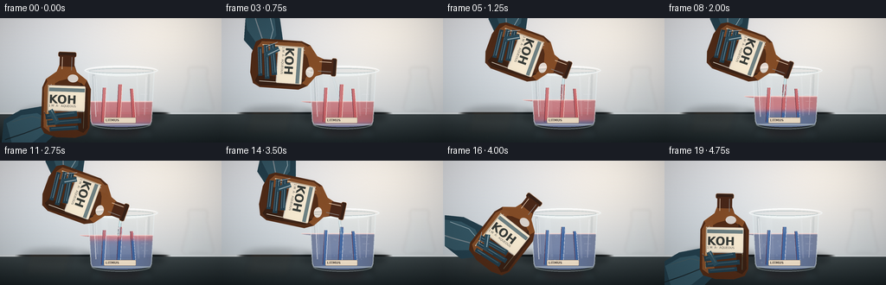
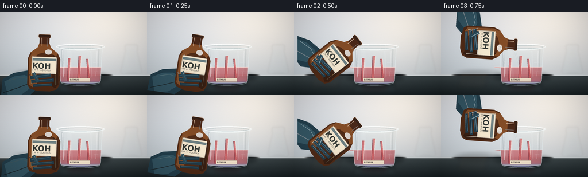
展开代码变化
--- 上一保存版本
+++ 本次保存版本
@@ -200,9 +200,9 @@
def render_litmus(base: Image.Image, frame: int) -> Image.Image:
level, blue, pour = liquid_geometry(frame)
strips = [
- (118.6, 120.6, 80.4, 3.8),
- (136.7, 138.8, 76.8, 4.3),
- (154.8, 152.0, 81.7, 3.7),
+ (115.0, 116.5, 84.5, 4.8),
+ (136.8, 138.8, 78.2, 5.4),
+ (157.5, 155.0, 85.3, 4.7),
]
red = np.array([196, 63, 70], dtype=np.float32)
blue_rgb = np.array([47, 95, 157], dtype=np.float32)
@@ -228,8 +228,8 @@
local_blue = local_blue * local_blue * (3.0 - 2.0 * local_blue)
# Dry paper above the liquid wicks color a little later than the immersed part.
wick = smoothstep(5.0, 18.0, frame) * np.clip((120.0 - YY_NATIVE) / 48.0, 0.0, 1.0)
- local_blue = np.clip(local_blue + wick * blue * 0.72, 0.0, 1.0)
- paper_tint = 0.16 + 0.06 * (index % 2)
+ local_blue = np.clip(local_blue + wick * blue * 0.78, 0.0, 1.0)
+ paper_tint = 0.08 + 0.035 * (index % 2)
color = red[None, None, :] * (1.0 - paper_tint) + warm_paper[None, None, :] * paper_tint
color = color[None, None, :] * (1.0 - local_blue[..., None]) + blue_rgb[None, None, :] * local_blue[..., None]
@@ -238,7 +238,7 @@
color *= fibers[..., None]
edge_glow = np.exp(-((XX_NATIVE - (x_top + x_bottom) / 2.0) / (width * 0.48)) ** 2)
color += (edge_glow * 10.0)[..., None]
- alpha = m * (207.0 + 18.0 * np.exp(-((YY_NATIVE - level) / 2.0) ** 2))
+ alpha = m * (230.0 + 18.0 * np.exp(-((YY_NATIVE - level) / 2.0) ** 2))
layer = pil_rgba(color, alpha)
base = Image.alpha_composite(base, layer)
@@ -350,10 +350,10 @@
def make_bottle_sprite() -> Image.Image:
- size = 200.0
+ size = 240.0
canvas = Image.new("RGBA", (s(size), s(size)), (0, 0, 0, 0))
d = ImageDraw.Draw(canvas, "RGBA")
- pivot_local = np.array([73.0, 17.0])
+ pivot_local = np.array([74.0, 16.0])
offset = np.array([size / 2.0, size / 2.0]) - pivot_local
def p(values: list[tuple[float, float]]) -> list[tuple[int, int]]:
@@ -376,53 +376,53 @@
# Amber bottle body.
bottle = [
- (65, 10),
- (80, 10),
- (81, 23),
- (84, 31),
- (96, 40),
- (101, 50),
- (101, 95),
- (97, 103),
- (85, 107),
- (63, 107),
- (49, 103),
- (45, 96),
- (45, 50),
- (49, 40),
- (61, 31),
- (64, 23),
+ (67, 7),
+ (81, 7),
+ (82, 19),
+ (84, 25),
+ (94, 34),
+ (100, 46),
+ (100, 89),
+ (97, 96),
+ (87, 99),
+ (62, 99),
+ (52, 96),
+ (48, 89),
+ (48, 46),
+ (54, 34),
+ (64, 25),
+ (66, 19),
]
d.polygon(p(bottle), fill=(79, 43, 22, 255))
- d.polygon(p([(49, 40), (61, 31), (64, 23), (80, 23), (84, 31), (96, 40), (93, 47), (88, 43), (78, 38), (64, 42), (54, 48)]), fill=(128, 76, 37, 255))
- d.polygon(p([(47, 50), (51, 42), (59, 39), (62, 97), (55, 101), (48, 96)]), fill=(130, 79, 41, 255))
- d.polygon(p([(89, 43), (97, 50), (99, 95), (94, 101), (87, 98)]), fill=(55, 32, 19, 255))
- d.rounded_rectangle(b((62, 8, 83, 14)), radius=s(2.0), fill=(51, 31, 21, 255), outline=(156, 105, 62, 205), width=s(0.55))
- d.rounded_rectangle(b((64, 12, 81, 25)), radius=s(1.2), fill=(71, 39, 23, 255))
- d.line(p([(67, 14), (67, 28)]), fill=(208, 145, 78, 108), width=s(0.8))
- d.line(p([(78, 14), (78, 29)]), fill=(35, 21, 16, 130), width=s(0.7))
+ d.polygon(p([(52, 46), (54, 35), (64, 25), (66, 19), (82, 19), (84, 25), (94, 34), (97, 45), (91, 41), (82, 34), (67, 38), (57, 46)]), fill=(135, 80, 39, 255))
+ d.polygon(p([(50, 47), (54, 36), (61, 33), (64, 91), (57, 95), (51, 89)]), fill=(137, 83, 43, 255))
+ d.polygon(p([(89, 38), (96, 46), (98, 89), (93, 96), (87, 92)]), fill=(55, 32, 19, 255))
+ d.rounded_rectangle(b((65, 5, 84, 10)), radius=s(2.0), fill=(51, 31, 21, 255), outline=(166, 112, 65, 205), width=s(0.55))
+ d.rounded_rectangle(b((67, 9, 82, 21)), radius=s(1.2), fill=(71, 39, 23, 255))
+ d.line(p([(69, 11), (69, 25)]), fill=(208, 145, 78, 108), width=s(0.8))
+ d.line(p([(80, 11), (80, 26)]), fill=(35, 21, 16, 130), width=s(0.7))
# Glass highlights.
- d.line(p([(52, 47), (52, 95)]), fill=(240, 188, 107, 123), width=s(1.15))
- d.line(p([(55, 46), (55, 88)]), fill=(245, 208, 145, 50), width=s(0.6))
- d.line(p([(94, 49), (94, 96)]), fill=(230, 160, 87, 68), width=s(0.7))
- d.ellipse(b((74, 34, 86, 43)), fill=(219, 147, 75, 36))
+ d.line(p([(54, 43), (54, 90)]), fill=(245, 193, 111, 137), width=s(1.15))
+ d.line(p([(57, 42), (57, 83)]), fill=(245, 208, 145, 57), width=s(0.6))
+ d.line(p([(93, 45), (93, 91)]), fill=(230, 160, 87, 68), width=s(0.7))
+ d.ellipse(b((76, 29, 88, 38)), fill=(219, 147, 75, 36))
# Cream label with the reagent name.
- d.rounded_rectangle(b((52, 47, 95, 77)), radius=s(1.8), fill=(236, 226, 197, 249), outline=(91, 66, 47, 156), width=s(0.5))
- d.rectangle(b((53, 50, 94, 54)), fill=(69, 92, 91, 190))
- d.text((s(53.0 + offset[0]), s(55.4 + offset[1])), "KOH", font=font(FONT_BOLD, 13.2), fill=(43, 47, 43, 244))
- d.text((s(53.0 + offset[0]), s(68.7 + offset[1])), "1 M · AQUEOUS", font=font(FONT_REGULAR, 3.6), fill=(69, 67, 58, 214))
- d.line(p([(54, 76), (93, 76)]), fill=(119, 103, 78, 76), width=s(0.4))
+ d.rounded_rectangle(b((53, 43, 94, 71)), radius=s(1.8), fill=(239, 229, 199, 252), outline=(91, 66, 47, 156), width=s(0.5))
+ d.rectangle(b((54, 45, 93, 49)), fill=(61, 87, 86, 205))
+ d.text((s(55.0 + offset[0]), s(49.7 + offset[1])), "KOH", font=font(FONT_BOLD, 13.0), fill=(40, 44, 40, 248))
+ d.text((s(54.5 + offset[0]), s(63.3 + offset[1])), "1 M AQUEOUS", font=font(FONT_REGULAR, 3.5), fill=(66, 63, 54, 224))
+ d.line(p([(55, 70), (92, 70)]), fill=(119, 103, 78, 76), width=s(0.4))
# Fingers and thumb in front of the lower body, leaving the label clear.
- for idx, (x1, y1, x2, y2) in enumerate([(50, 84, 86, 79), (52, 91, 91, 87), (55, 98, 88, 95)]):
+ for idx, (x1, y1, x2, y2) in enumerate([(51, 78, 84, 74), (52, 85, 90, 81), (55, 92, 87, 89)]):
d.line(p([(x1, y1), (x2, y2)]), fill=(33, 61, 73, 255), width=s(6.2 - idx * 0.55))
d.line(p([(x1 + 2, y1 - 0.7), (x2 - 3, y2 - 0.8)]), fill=(61, 98, 109, 205), width=s(1.25))
d.line(p([(x1 + 1, y1 + 2.0), (x2 - 2, y2 + 1.5)]), fill=(20, 44, 53, 105), width=s(0.55))
- d.line(p([(55, 76), (64, 91)]), fill=(42, 76, 88, 255), width=s(6.0))
- d.line(p([(56, 76), (63, 88)]), fill=(91, 129, 136, 130), width=s(1.1))
- d.line(p([(48, 78), (54, 91)]), fill=(24, 50, 60, 80), width=s(0.7))
+ d.line(p([(55, 71), (64, 87)]), fill=(42, 76, 88, 255), width=s(6.0))
+ d.line(p([(56, 71), (63, 84)]), fill=(91, 129, 136, 130), width=s(1.1))
+ d.line(p([(48, 73), (54, 87)]), fill=(24, 50, 60, 80), width=s(0.7))
return canvas
@@ -460,9 +460,9 @@
angle_key = int(round(theta))
rotated = BOTTLE_CACHE.get(angle_key)
if rotated is None:
- rotated = BOTTLE_SPRITE.rotate(-theta, resample=Image.Resampling.BICUBIC, center=(s(100), s(100)))
+ rotated = BOTTLE_SPRITE.rotate(-theta, resample=Image.Resampling.BICUBIC, center=(s(120), s(120)))
BOTTLE_CACHE[angle_key] = rotated
- dest = (s(px) - s(100), s(py) - s(100))
+ dest = (s(px) - s(120), s(py) - s(120))
base.alpha_composite(rotated, dest=dest)
return base, (px, py)
候选 03播放与检查图

可观测工具轨迹
实际执行的命令与返回图片。
命令 1exit 0
/bin/bash -lc "pwd && rg --files -g '"'!*.pyc'"' -g '"'!__pycache__'"' | sed -n '1,200p'"
命令 2exit 0
/bin/bash -lc "sed -n '1,240p' GENERATION_RULES.md"
命令 3exit 0
/bin/bash -lc "sed -n '1,240p' task_spec.json"
命令 4exit 0
/bin/bash -lc "sed -n '1,240p' prompt.txt"
命令 5exit 0
/bin/bash -lc "sed -n '1,260p' artifact_io.py"
命令 6exit 0
/bin/bash -lc "sed -n '1,260p' player_template.html"
命令 7exit 0
/bin/bash -lc "find . -maxdepth 2 -type f -printf '%p %s bytes\\n' | sort"
命令 8exit 0
/bin/bash -lc "fc-match 'DejaVu Sans:style=Bold' -f '%{file}\\n' | head -1"命令 9exit 0
/bin/bash -lc 'python generate.py'
命令 10exit 0
/bin/bash -lc "python - <<'PY'
import generate
from PIL import Image
img=generate.BOTTLE_SPRITE
img.resize((400,400), Image.Resampling.LANCZOS).save('bottle_debug.png')
PY"命令 11exit 0
/bin/bash -lc "rg -n \"strips =|make_bottle_sprite|pivot_local|bottle =|rounded_rectangle\\(b|1 M|for idx|dest =\" generate.py"
命令 12exit 0
/bin/bash -lc "sed -n '198,266p' generate.py && sed -n '348,472p' generate.py"
命令 13exit 0
/bin/bash -lc "sed -n '398,426p' generate.py | cat -vet"
命令 14exit 0
/bin/bash -lc "sed -n '412,427p' generate.py"
命令 15exit 0
/bin/bash -lc "python - <<'PY'
from pathlib import Path
p=Path('generate.py')
s=p.read_text()
start=s.index(' # Cream label with the reagent name.\\n')
end=s.index(' return canvas\\n', start)
new=''' # Cream label with the reagent name.
d.rounded_rectangle(b((53, 43, 94, 71)), radius=s(1.8), fill=(239, 229, 199, 252), outline=(91, 66, 47, 156), width=s(0.5))
d.rectangle(b((54, 45, 93, 49)), fill=(61, 87, 86, 205))
d.text((s(55.0 + offset[0]), s(49.7 + offset[1])), \"KOH\", font=font(FONT_BOLD, 13.0), fill=(40, 44, 40, 248))
d.text((s(54.5 + offset[0]), s(63.3 + offset[1])), \"1 M AQUEOUS\", font=font(FONT_REGULAR, 3.5), fill=(66, 63, 54, 224))
d.line(p([(55, 70), (92, 70)]), fill=(119, 103, 78, 76), width=s(0.4))
# Fingers and thumb in front of the lower body, leaving the label clear.
for idx, (x1, y1, x2, y2) in enumerate([(51, 78, 84, 74), (52, 85, 90, 81), (55, 92, 87, 89)]):
d.line(p([(x1, y1), (x2, y2)]), fill=(33, 61, 73, 255), width=s(6.2 - idx * 0.55))
d.line(p([(x1 + 2, y1 - 0.7), (x2 - 3, y2 - 0.8)]), fill=(61, 98, 109, 205), width=s(1.25))
d.line(p([(x1 + 1, y1 + 2.0), (x2 - 2, y2 + 1.5)]), fill=(20, 44, 53, 105), width=s(0.55))
d.line(p([(55, 71), (64, 87)]), fill=(42, 76, 88, 255), width=s(6.0))
d.line(p([(56, 71), (63, 84)]), fill=(91, 129, 136, 130), width=s(1.1))
d.line(p([(48, 73), (54, 87)]), fill=(24, 50, 60, 80), width=s(0.7))
'''
p.write_text(s[:start]+new+s[end:])
PY"命令 16exit 0
/bin/bash -lc "rg -n \"size =|pivot_local|bottle =|dest =|1 M|for idx, \\(x1\" generate.py && python generate.py"
命令 17exit 0
/bin/bash -lc "python - <<'PY'
from PIL import Image
for i in [0,2,4,8,18]:
Image.open(f'frames/{i:02d}.png').resize((1024,576), Image.Resampling.NEAREST).save(f'frame_{i:02d}_large.png')
PY"命令 18exit 0
/bin/bash -lc "python - <<'PY'
from pathlib import Path
for name in ['bottle_debug.png','frame_00_large.png','frame_02_large.png','frame_04_large.png','frame_08_large.png','frame_18_large.png']:
p=Path(name)
if p.exists():
p.unlink()
cache=Path('__pycache__')
if cache.exists():
for p in cache.iterdir():
p.unlink()
cache.rmdir()
PY
python -m py_compile generate.py
python - <<'PY'
from pathlib import Path
import numpy as np
from PIL import Image
root = Path('.')
with np.load(root / 'pixels.npz') as data:
pixels = data['pixels']
frames = sorted((root / 'frames').glob('*.png'))
sizes = {Image.open(p).size for p in frames}
print('pixels:', pixels.shape, pixels.dtype)
print('frames:', len(frames), 'sizes:', sizes)
print('player:', (root / 'index.html').stat().st_size, 'bytes')
print('all_required:', all((root / name).exists() for name in ['generate.py','pixels.npz','index.html','inspection.png']))
PY"视觉工具实际返回图片 1

视觉工具实际返回图片 2
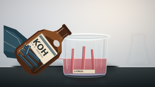
视觉工具实际返回图片 3
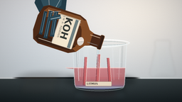
视觉工具实际返回图片 4
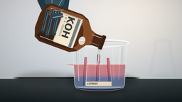
视觉工具实际返回图片 5
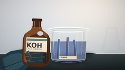
视觉工具实际返回图片 6
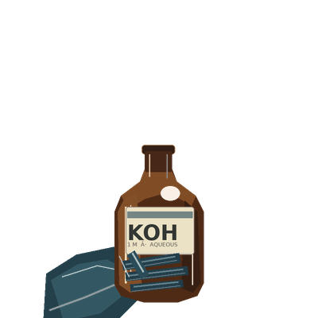
视觉工具实际返回图片 7
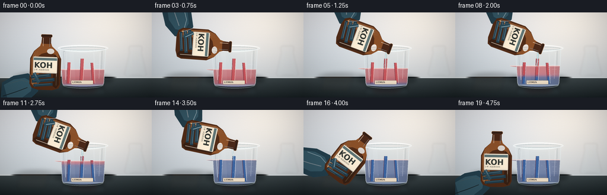
视觉工具实际返回图片 8
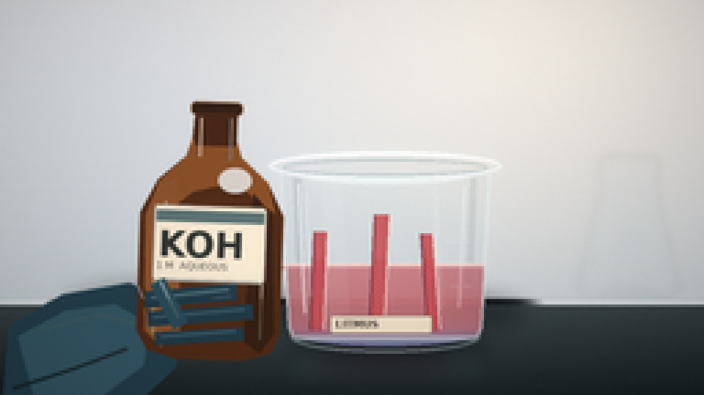
视觉工具实际返回图片 9
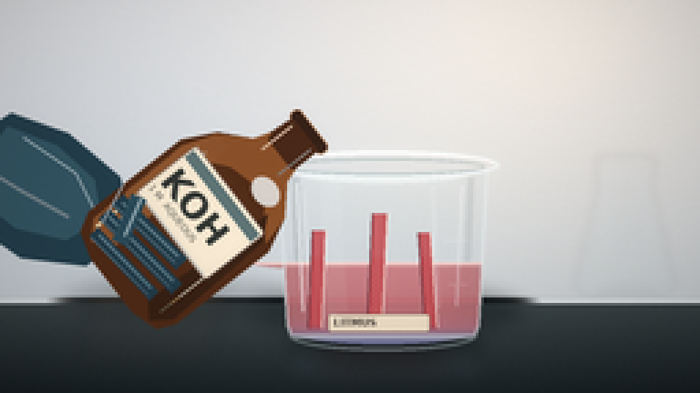
视觉工具实际返回图片 10
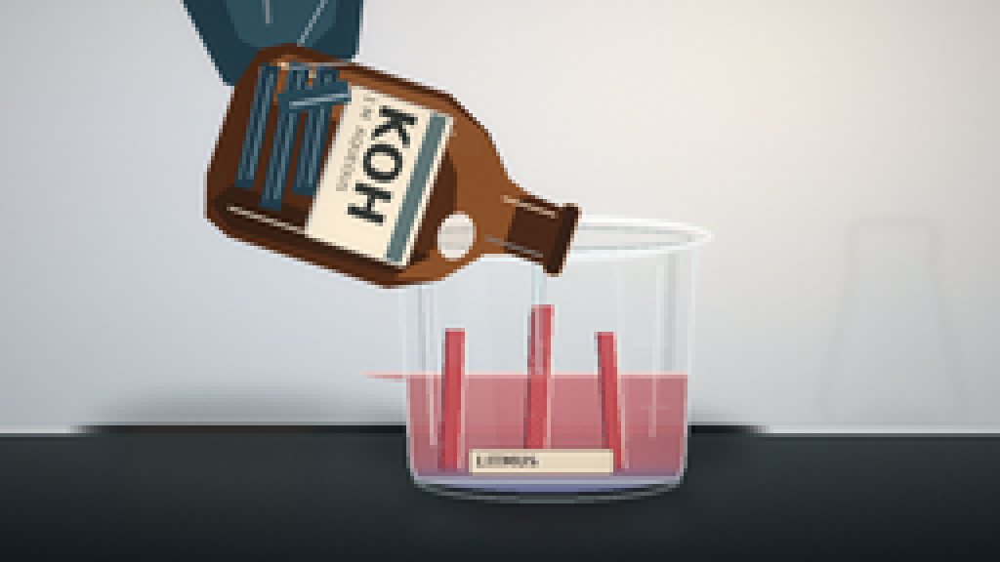
视觉工具实际返回图片 11
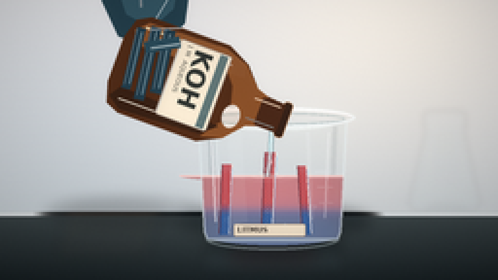
视觉工具实际返回图片 12
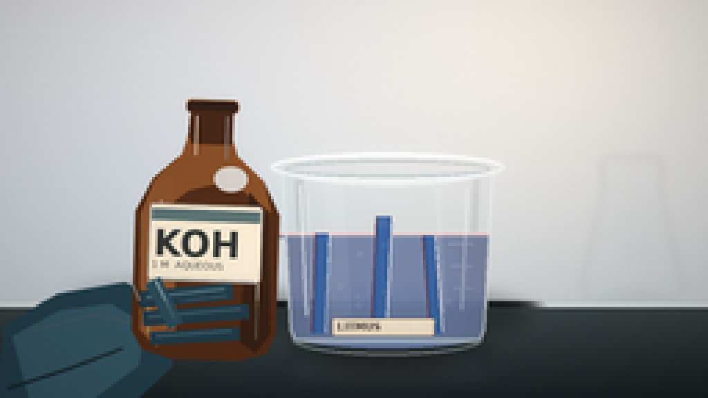
视觉工具实际返回图片 13

保存候选 3 份；完成命令 18 次；可验证图片返回 13 张。原始 API 响应与完整日志保留在本地。